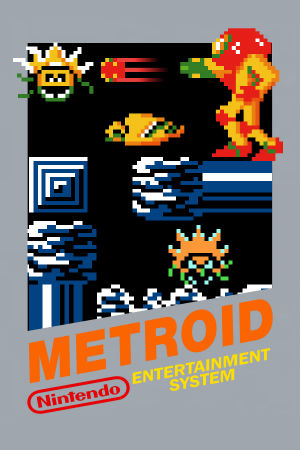

NES, Game Boy Advance, GameCube (unlockable bonus in Metroid Prime + Metroid: Zero Mission), Wii/Wii U Virtual Console, Nintendo 3DS Virtual Console, Nintendo Switch Online
Originally released in August 1986 for the Famicom Disk System (known as the NES in the West), Metroid is the first game in the Metroid series. It was developed by Nintendo R&D1 and produced by Gunpei Yokoi. The game combined the side-scrolling platforming of Super Mario Bros. with the non-linear exploration and item-gated progression seen in games like Haunted House and Atic Atac, making it one of the first games to blend platforming with exploration and backtracking. It was a very ambitious game for its time, introducing players to Samus Aran, one of gaming's first major female protagonists, a fact only revealed at the end of the game. Its success launched one of Nintendo's flagship series and laid much of the groundwork for Super Metroid and the Metroidvania genre as a whole.
Gameplay follows Samus Aran on the planet Zebes instead of SR388. Tasked with hunting the Metroids and defeating Mother Brain, players acquire abilities like the morph ball, varia suit, and ice beam, unlocking new areas through non-linear exploration. Combat involves platforming and shooting, with Metroid encounters serving as pseudo-boss fights. The game's dark visuals and limited hardware create a stark atmosphere, but the game's tight design and exploration focus make it a foundational title in the series. The NES release uses password-based saving, while the original Famicom Disk System version supported saving to disk.
Nintendo - Official developer/publisher website.
Metroid Site - Official Metroid website.
Omega Metroid - A fantastic fan website that includes walkthroughs and maps for all Metroid games.
Metroid Database - Another amazing fan website with lots of Metroid resources.
Metroid Recon - Yet another great fan website with unique Metroid content.
Metroid Construction - A Metroid fan website focusing on ROM hacks.
Metroid Wiki - Contains lots of information about Metroid.
Metroid Manual - PDF copy of the game's manual.
Metroid: Rogue Dawn - An unofficial prequel to the original Metroid following Dawn Aran, with entirely custom graphics, music, saving, and a full map.
Metroid: HD Custom Edition - A graphics/sound overhaul pack for NEStroid built on Metroid mOTHER, best played in the Mesen 2 emulator.
M. Planets - A standalone NEStroid-style game (not a ROM hack) with two full planets, multiplayer, a randomizer mode, and a room editor.
Steam Grid DB (Metroid) - Contains lots of cool options for artwork that can be used in your Steam library.